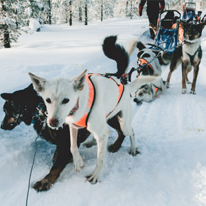

Fish Haven Idaho
Weather Summary
Currently:
Current Temp: °F
High 50 °F
Wind Chill:
Humidity: %
Wind Speed: 10 mph
5 Day Forecast
First Annual Dog Sled Race
The long anticapated Annual Dog Sled Race held last weekend was a huge success. People came from all over Idaho, Wyoming, and Utah to participate or watch the event. The snow storm the previous week, combined with the beautiful sunshine on Saturday, set the stage for the event to run successfully. The first prize went to Jonathan Biggs and his team of dogs lead by his lead dog Fisky. It was quite the event to watch. The excitement built as the race neared the end. The last stretch, Biggs was head to head with competitor Ed Schmall. Biggs pulled through with a tight win. The success of this event has got everyone excited for next years event. Plans have already began for next year. If you are interesting in helping plan the next event, call the Fish Haven City Council.
Upcoming Events:
Contact Information
Elemental Weather
70 West 400 South
Preston, ID 83267